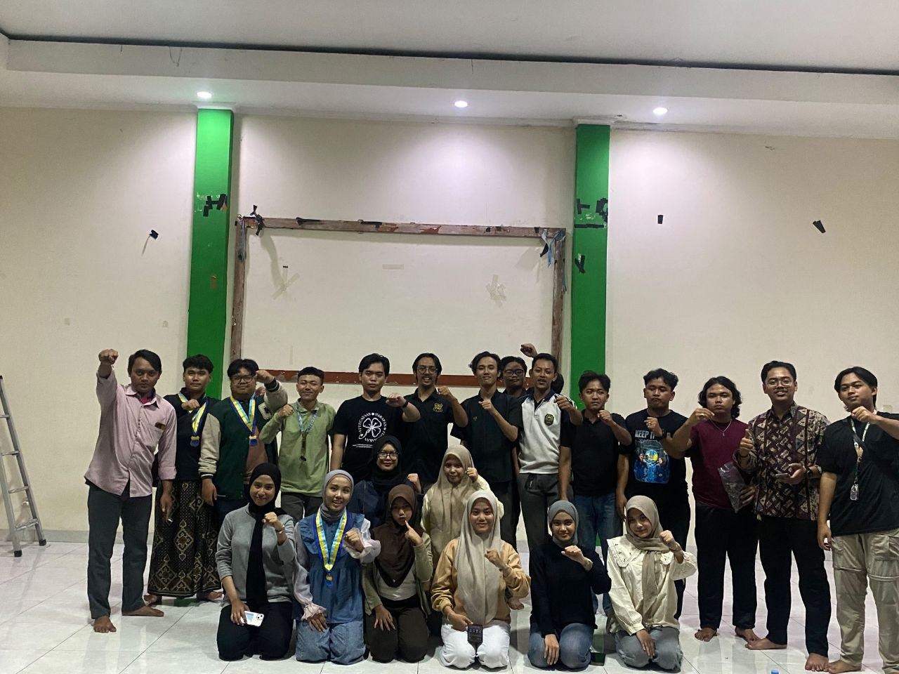
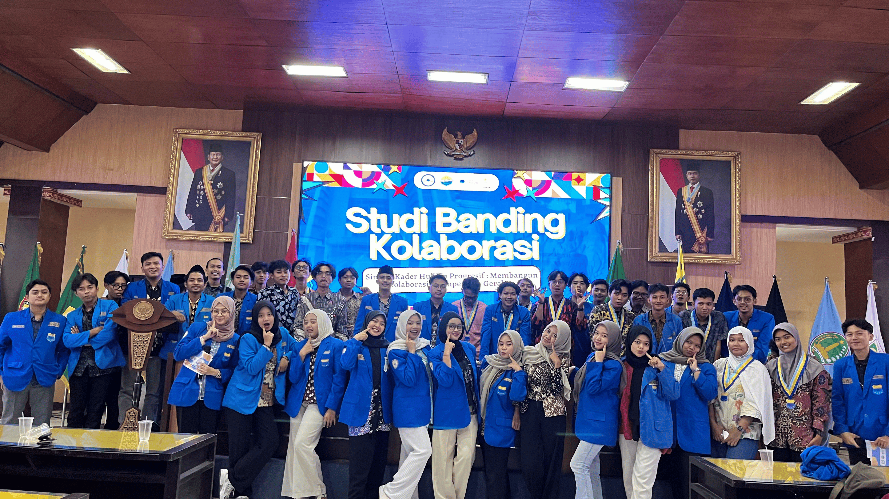
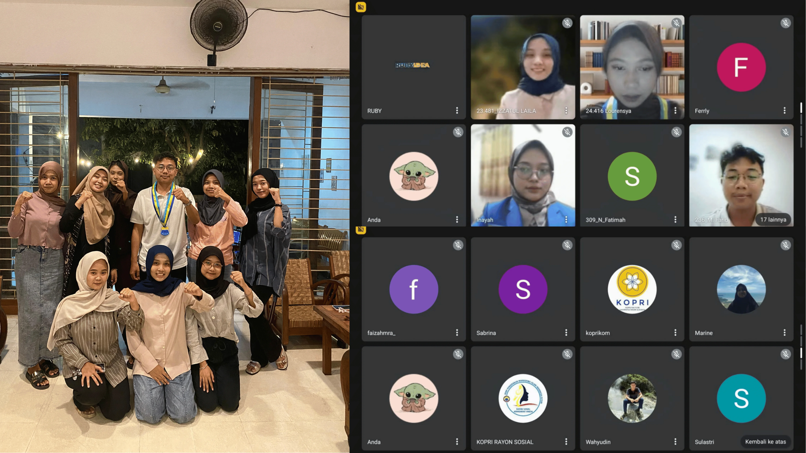

PROGRAM KERJA
Keagamaan
Mengembangkan kegiatan dakwah Keagamaan melalui pengajian rutin, kajian kitab, peringatan hari besar Keagamaan, dan kegiatan spiritual untuk memperkuat keimanan anggota
Keilmuan
Mengembangkan kapasitas intelektual anggota melalui seminar, workshop, diskusi akademis, pelatihan keterampilan, dan kegiatan pengembangan soft skills
Sosial
Aktif dalam kegiatan sosial kemasyarakatan seperti bakti sosial, penggalangan dana untuk korban bencana, kunjungan ke panti asuhan, dan kepedulian sosial lainnya
Politik
Mengembangkan kesadaran politik dan kebangsaan anggota melalui diskusi kebangsaan, kelas politik, dan kegiatan yang memperkuat nilai-nilai NKRI dan Agama
mengapa bergabung dengan kami?
komunitas solid
Menjadi bagian dari keluarga besar PMII yang solid dan saling mendukung
pengembangan diri
- pelatihan kepemimpinan
- pengembangan kreativitas
- jaringan nasional
bermakna
Kontribusi nyata bagi masyarakat melalui berbagai kegiatan sosial dan dakwah
kegiatan terbaru
kegiatan lainnya

